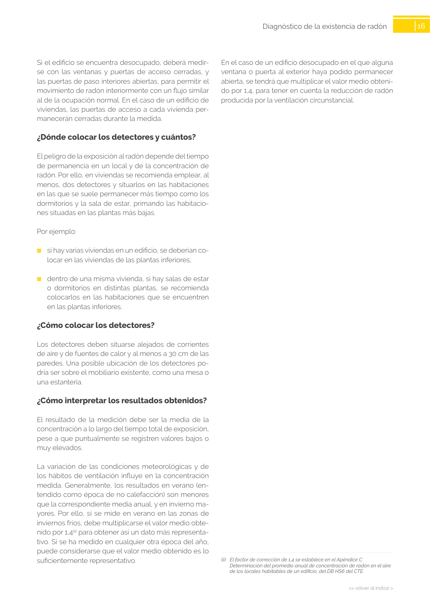

GUIA · ¿En qué condiciones medir? · versión sin-fecha · capa guia
Formatos: JSON compacto · Markdown · PDF fuente
Ámbito del documento · texto del ámbito · documento y tablas
Tipo: tablas, figuras · nivel 3 · sección estimada: Capítulo · padre: a0037
¿En qué condiciones medir? Lo más adecuado es continuar con las actividades ha bituales de uso y de ventilación del edificio durante la medición para que el resultado sea representativo. 16 >> volver al índice > >> volver al índice > Diagnóstico de la existencia de radón En el caso de un edificio desocupado en el que alguna ventana o puerta al exterior haya podido permanecer abierta, se tendrá que multiplicar el valor medio obteni do por 1,4, para tener en cuenta la reducción de radón producida por la ventilación circunstancial. Si el edificio se encuentra desocupado, deberá medir se con las ventanas y puertas de acceso cerradas, y las puertas de paso interiores abiertas, para permitir el movimiento de radón interiormente con un flujo similar al de la ocupación normal. En el caso de un edificio de viviendas, las puertas de acceso a cada vivienda per manecerán cerradas durante la medida.

PDF fuente redistribuible: copia fiel enlazada en esta página (SHA256 verificado).